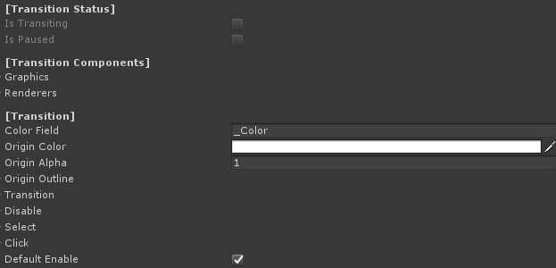
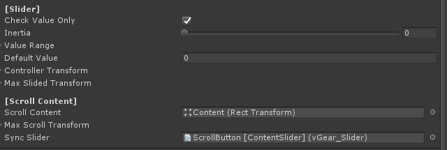

Detail of UI Element
This page described the detail of components related to V Gear_UI (Script).
Note: This page is still Under Construction.
Transition Settings
| Color Field | Shader color field name for materials. Should not be changed if using default material. |
| Origin Color | The original color for the UI element. |
| Origin Alpha | The original alpha for the UI element. |
| Origin Outline | An Outline structure to save the original outline setting for the UI element. |
| Origin Outline - Enable | Enable to enable the outline |
| Origin Outline - Color | The color of the outline. |
| Origin Outline - Width | The width of the outline. |
| Origin Outline - Mode | The mode of the outline. |
| Transition | Structure for frame and User transition of transformation. |
| Transition - Parameter | Transition calculation parameter. |
| Transition - Transition Factor | Transition factor value, affected by the parameter. |
| Transition - Acceleration Factor | Transition accelerating value. |
| Transition - Deceleration Factor | Transition decelerating value. |
| Transition - Unscaled Delta TIme | Enable to use unscaled delta time. |
| UIState | The state of UI elements after a transition, including a Transform, a color, an alpha and an outline structure. Can be used on disable, on select or on click. |
| Default Enable | Enable to enable the UI on start. |
Slider Settings
| Check Value Only | True to disable the first interaction. For example be used to content slider. False example is to be used as volume slider. |
| Inertia | The movement rate after controller release. No movement for 0, no deceleration for 1. |
| Value Range | The interaction return value range of slider.
Note that the value is inherited from VGear interactable, that can be get/set by GetValue() or SetValue() here. |
| Default Value | Sliding value of slider on start. |
| Controller Transform | Structure to calculate controller transformation,
as a factor to map from controller input to the slider, the value of this should be the same ratio to the parent transform scale with the Max Slided Transform to synchorinize controller input. |
| ObjectDirection | Enable to check transform change base on object direction, else base on controller direction |
| Max Slided Transform | The maximum slider transformation for the slider movement. |
| Scroll Content | The transform of scrollcontent. |
| Max Scroll Transform | The maximum scroll content transformation value from the original. |
| Sync Slider | Synchronized slider, can be used with content slider. |
